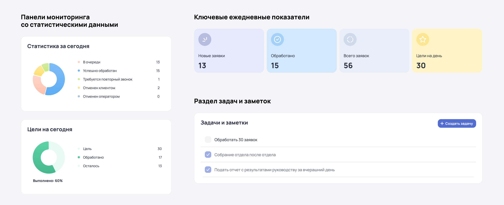
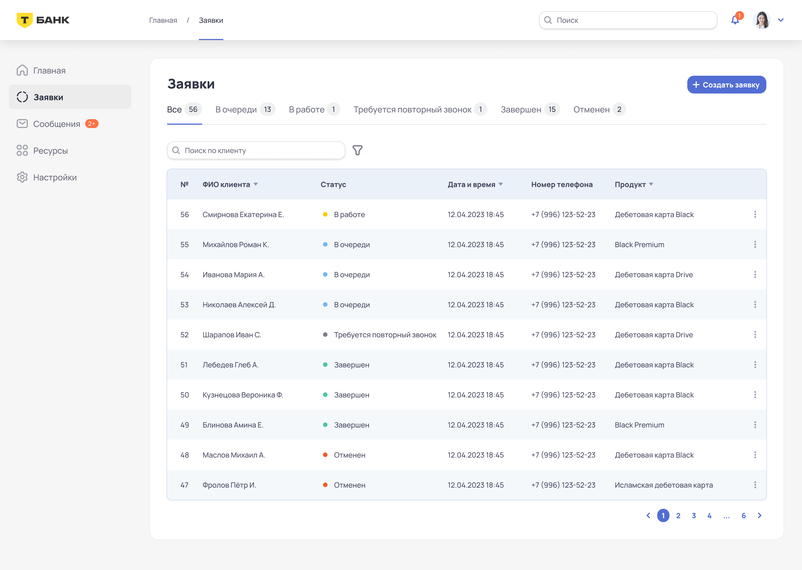
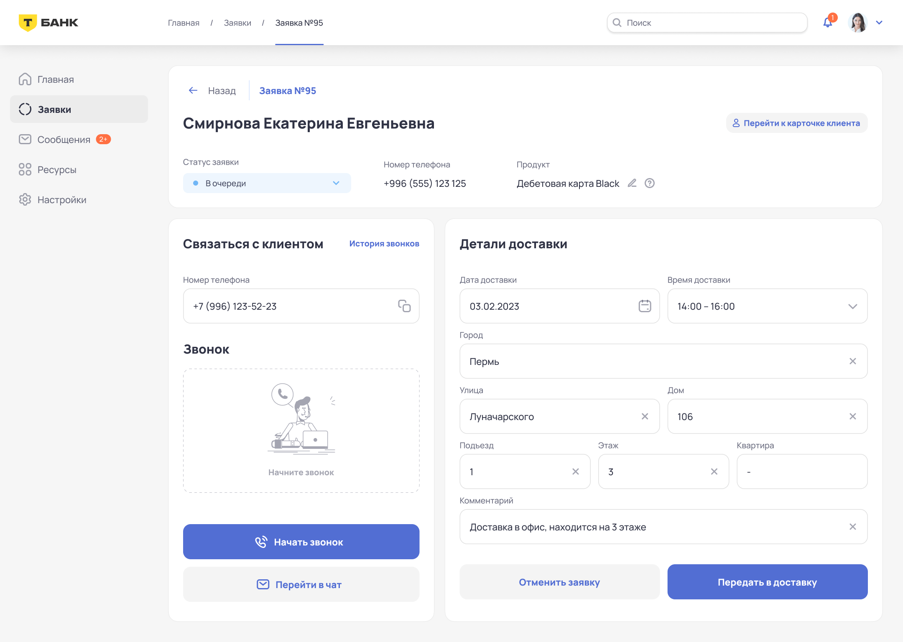
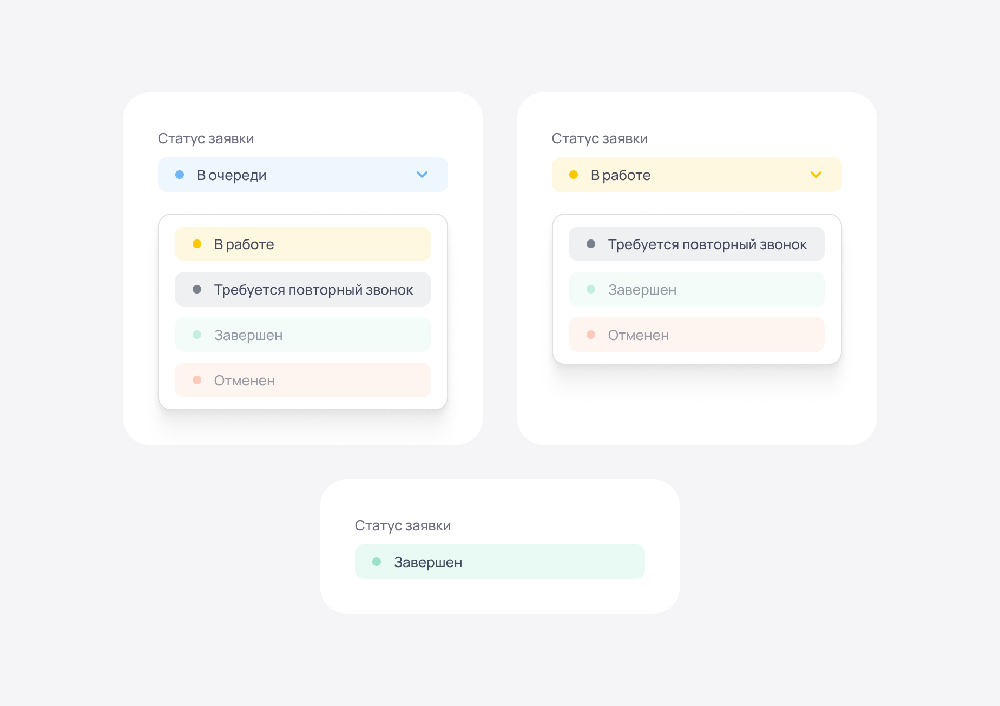
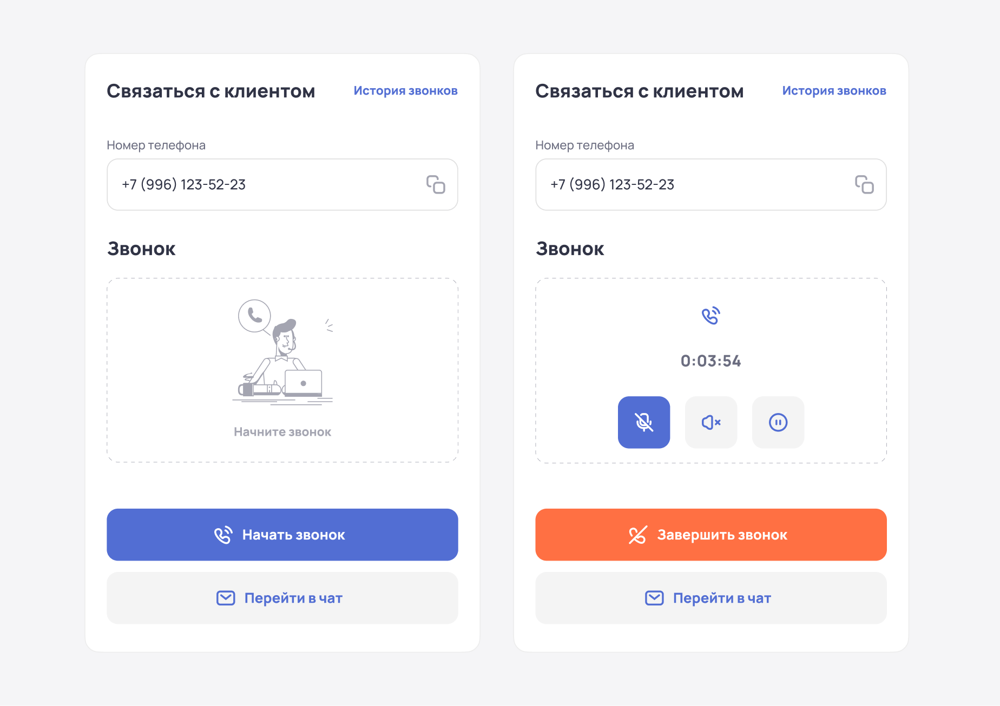
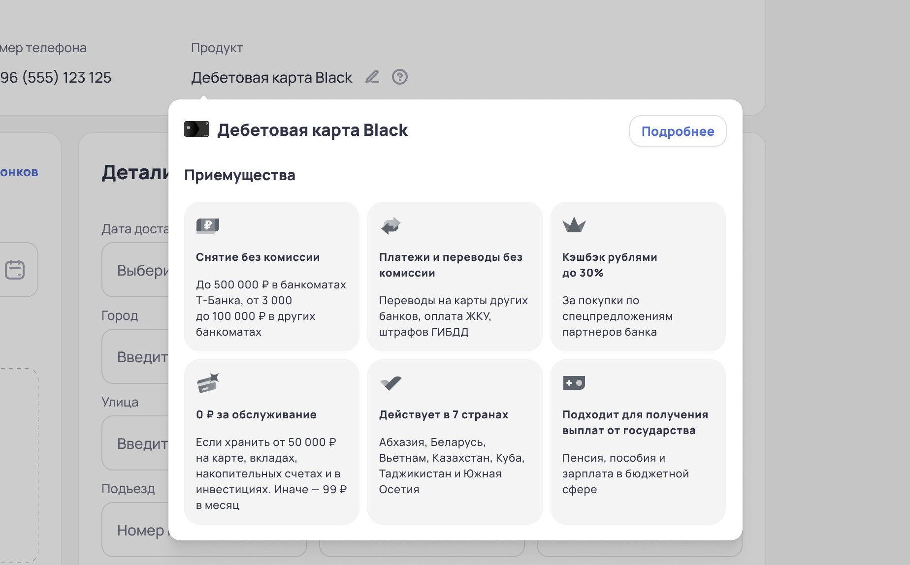
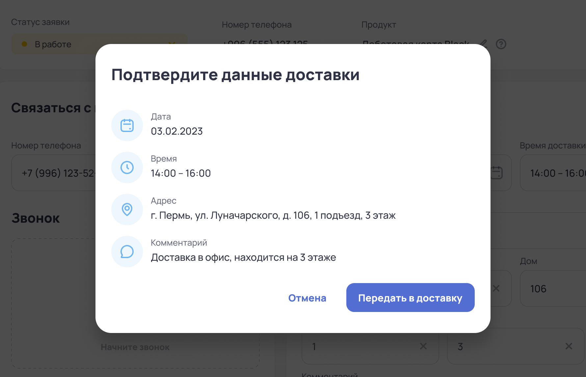
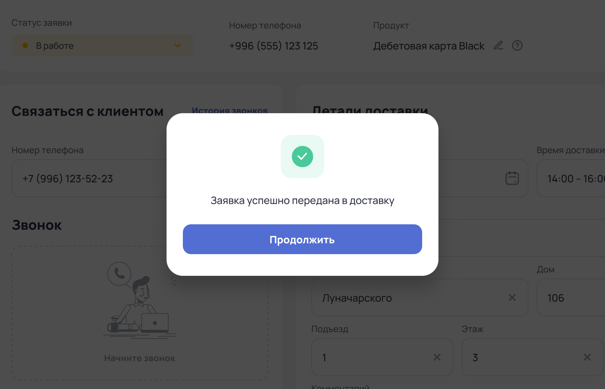

Т-банк — интерфейс оператора колл-центра
UX/UI design
·
CRM
·
2023

О проекте
Операторы колл-центра банка ежедневно обрабатывают сотни заявок на доставку банковских карт. Им необходимо быстро проверять данные клиентов, назначать встречи с курьером и фиксировать статус каждого обращения.
Поэтому важно обеспечить им удобный и интуитивно понятный интерфейс, который сократит время на обработку информации, упростит их работу и позволит банку оптимизировать затраты.
Задача
Спроектировать интерфейс внутренней CRM-системы для операторов колл-центра. Новый инструмент должен упростить процесс назначения встреч, сделать управление заявками более прозрачным и повысить общую эффективность работы сотрудников.
Решение
✦ Разработана главная страница с дашбордами, ключевой аналитикой, статистикой и актуальными данными на текущий рабочий день сотрудника.
✦ Разработан экран с таблицей со всеми заявками, в котором оператор может увидеть всю основную информацию и перейти к карточке заявки.
✦ Добавлены быстрые действия, такие как звонок, перенос встречи, отметка о недозвоне и о повторном звонке.
✦ Обеспечена логичная структура интерфейса, позволяющая операторам эффективно управлять заявками.
Результат
✦ Операторы быстрее обрабатывают заявки. Уменьшено среднее время, затрачиваемое на клиента.
✦ Дашборды с актуальными данными о заявках помогают расставлять приоритеты в задачах.
✦ Четкая структура коммуникации и своевременные фоллоу-апы повышают удовлетворённость клиентов.
Юзер стори
Как оператор колл-центра, я могу:
✦ Проконсультировать клиента по оформленному продукту.
✦ Назначить встречу в удобное для клиента время.
✦ Связаться с клиентом в чате, если возникла необходимость.
✦ Увидеть рабочий/домашний адрес клиента для назначения встречи, изменить его или добавить новый.
✦ Использовать внутренние инструменты для совершения звонка: возможность начать/завершить звонок, а также поставить его на удержание, выключить звук, микрофон.
✦ Посмотреть историю звонков и при необходимости перейти к карточке клиента, если мне нужна будет дополнительная информация.
Гипотезы
Я начала с формирования гипотез. Мне было важно понять, какие функции действительно помогут операторам работать быстрее и эффективнее. Для этого я изучила их основные задачи, а также опросила людей, работающих в сфере звонков. У них я узнала, какими сервисами они пользуются и с какими проблемами сталкиваются при их использовании, выявила болевые точки и на основе этого сформулировала основные гипотезы.
1
Быстрый доступ к данным
1 Быстрый доступ к данным
Если у оператора под рукой будут все нужные данные о клиенте, он сможет сразу отвечать на вопросы и не тратить время на поиски.
2
История работы с заявкой
2 История работы с заявкой
Благодаря истории всех действий по заявке, операторы смогут легко отслеживать, что уже сделано и какие шаги нужны дальше.
3
Чат
3 Чат
Если добавить возможность использовать чат и отправлять клиенту сообщения, контакт можно установить быстрее.
4
Фильтрация и поиск
4 Фильтрация и поиск
Если оператор сможет использовать фильтры и поиск заявок под свои задачи, он будет обрабатывать их быстрее.
5
Статистика
5 Статистика
Если оператор сможет видеть свою статистику по звонкам и заявкам, он сможет анализировать свою эффективность и понимать, как достичь KPI.
6
Быстрые действия
6 Быстрые действия
Если у оператора будут кнопки для быстрого выполнения задач (звонок, перенос встречи, отметка о недозвоне), он сможет обрабатывать заявки быстрее.
Юзер персона
Также я изучила отзывы сотрудников колл-центра на различных форумах и сайтах и на их основе создала портрет персоны и карту эмпатии.
Анастасия, 27 лет
Род деятельности
Оператор колл-центра
Мотивация
— Достичь ежемесячного процента KPI для получения премии.
— Повысить лояльность клиентов и получить положительные отзывы.
— Повысить лояльность клиентов и получить положительные отзывы.
Цели
— Консультировать клиентов банка, рекомендовать подходящие продукты и назначать встречи.
— Обработать максимальное количество заявок.
— Достичь цели по количеству обработанных заявок за смену.
— Обработать максимальное количество заявок.
— Достичь цели по количеству обработанных заявок за смену.
Болевые точки
— Слишком много времени тратится на обработку и ввод данных данных после звонка.
— Клиенты часто не отвечают на звонки.
— Запутанный интерфейс и большое количество ненужных вкладок.
— Клиенты часто не отвечают на звонки.
— Запутанный интерфейс и большое количество ненужных вкладок.
Карта эмпатий
Что делает?
— Обрабатывает заявки клиентов.
— Консультирует клиентов по продуктам банка.
— Назначает встречи клиентов с курьером.
— Консультирует клиентов по продуктам банка.
— Назначает встречи клиентов с курьером.
Что слышит?
— «Я не могу сейчас говорить».
— «У меня поменялись планы».
— «Хочу получить карту как можно скорее».
— «Расскажите о приемуществах этой карты».
— «У меня поменялись планы».
— «Хочу получить карту как можно скорее».
— «Расскажите о приемуществах этой карты».
Что думает?
— «Нужно быстро обработать запрос, у меня нет времени на поиск информации».
— «Боюсь сделать ошибку, особенно когда клиент торопится».
— «Было бы проще, если бы все необходимые данные были под рукой».
— «Боюсь сделать ошибку, особенно когда клиент торопится».
— «Было бы проще, если бы все необходимые данные были под рукой».
Что видит?
— Сложный интерфейс с множеством вкладок.
— Клиенты часто меняют свои планы.
— Другие операторы также сталкиваются с трудностями и подходят с вопросами.
— Количество клиентов банка растет.
— Клиенты часто меняют свои планы.
— Другие операторы также сталкиваются с трудностями и подходят с вопросами.
— Количество клиентов банка растет.
Решение
Главный экран
Сначала я представила интерфейс как простую форму для назначения встреч, но быстро поняла, что операторам нужна более продуманная система. Они работают с большим количеством заявок в день, поэтому интерфейс должен помогать быстро ориентироваться в данных, а не просто отображать их.
Я начала с главной страницы. Хотелось сделать её полезной и информативной, но не перегруженной. Первым решением был список заявок, но он не давал общего понимания рабочего дня. Тогда я добавила дашборды с ключевой аналитикой — сколько заявок поступило, сколько уже обработано, сколько ещё в очереди. Это сразу помогло сделать процесс более прозрачным.

Экран заявок
Этот экран должен помогать операторам быстро находить нужные заявки и эффективно с ними работать. Я структурировала список так, чтобы ключевая информация — статус заявки, данные клиента и назначенное время встречи — была сразу видна.
Также я добавила фильтры и поиск, чтобы операторы могли быстро находить нужные им заявки. Также предусмотрела возможность мгновенного перехода в карточку клиента для уточнения деталей или связи с ним.

Также я добавила фильтры и поиск, чтобы операторы могли быстро находить нужные им заявки. Также предусмотрела возможность мгновенного перехода в карточку клиента для уточнения деталей или связи с ним.
Экран обработки заявки
После нажатия на конкретного клиента в общем списке, открывается страница с деталями заявки. Здесь можно увидеть основные данные клиента, связаться с ним, уточнить детали доставки и передать заявку в работу. Интерфейс помогает быстро взаимодействовать с клиентом и удобно управлять процессом оформления доставки.

Оператор в пределах одного экрана может связаться с клиентом и тут же заполнить или отредактировать все необходимые данные - это очень удобно, все инструменты находятся под рукой, что очень ускоряет работу.

Смена статуса заявки
Оператор может управлять статусами заявки в зависимости от стадии обработки. Приступая к заявке, он устанавливает статус «В работе». Если заявка успешно обработана и передана курьеру, статус автоматически меняется на «Завершен». В процессе общения с клиентом оператор также может присвоить статус «Отменен» или «Требуется повторный звонок», если необходимо уточнение дополнительных деталей.

Панель звонка
Оператору достаточно одного клика, чтобы связаться с клиентом. Номер подгружается автоматически, а после нажатия на кнопку вызова появляется панель управления: можно отключить микрофон, поставить звонок на удержание или завершить разговор. Все функции собраны в одном месте для удобства и быстроты работы.

Подсказки с описанием продукта
При наведении на иконку рядом с названием продукта появляется всплывающее окно с преимуществами. Это помогает оператору быстро ориентироваться в деталях и оперативно отвечать на вопросы клиента.

Чат с клиентом
При нажатии на кнопку «Перейти в чат» открывается диалог с клиентом. Здесь оператор может отправить сообщение и уточнить детали доставки. Клиент также может самостоятельно обратиться к оператору для внесения изменений или уточнения информации.
В окне чата оператор может легко переходить к другим сообщениям. В общем мессенджере доступны все виды коммуникаций: переписка с клиентами, корпоративные сообщения и чаты с коллегами.
Подтверждение заявки
После общения с клиентом и заполнения всех необходимых данных заявка готова к передаче курьеру. Всплывающее окно позволяет оператору проверить корректность информации перед отправкой. При необходимости можно внести изменения, отменив действие.

Встреча успешно назначена
Теперь заявка успешно обработана и передана системой свободному курьеру. На этом работа оператора закончена, заявке автоматически присваивается статус «Завершен». Всплывающее окно уведомляет оператора об успешном завершении процесса, а кнопка «Продолжить» возвращает его к общей таблице с заявками без лишних шагов.

Результат
Мне удалось учесть весь негативный опыт пользователей, закрыть базовые потребности и оптимизировать рабочее пространство оператора колл-центра. Интуитивно понятный интерфейс упростит рабочий процесс и позволит операторам быстрее обрабатывать заявки. Это не только повысит удобство работы, но и поспособствует росту числа выданных продуктов, что положительно скажется на прибыли банка.